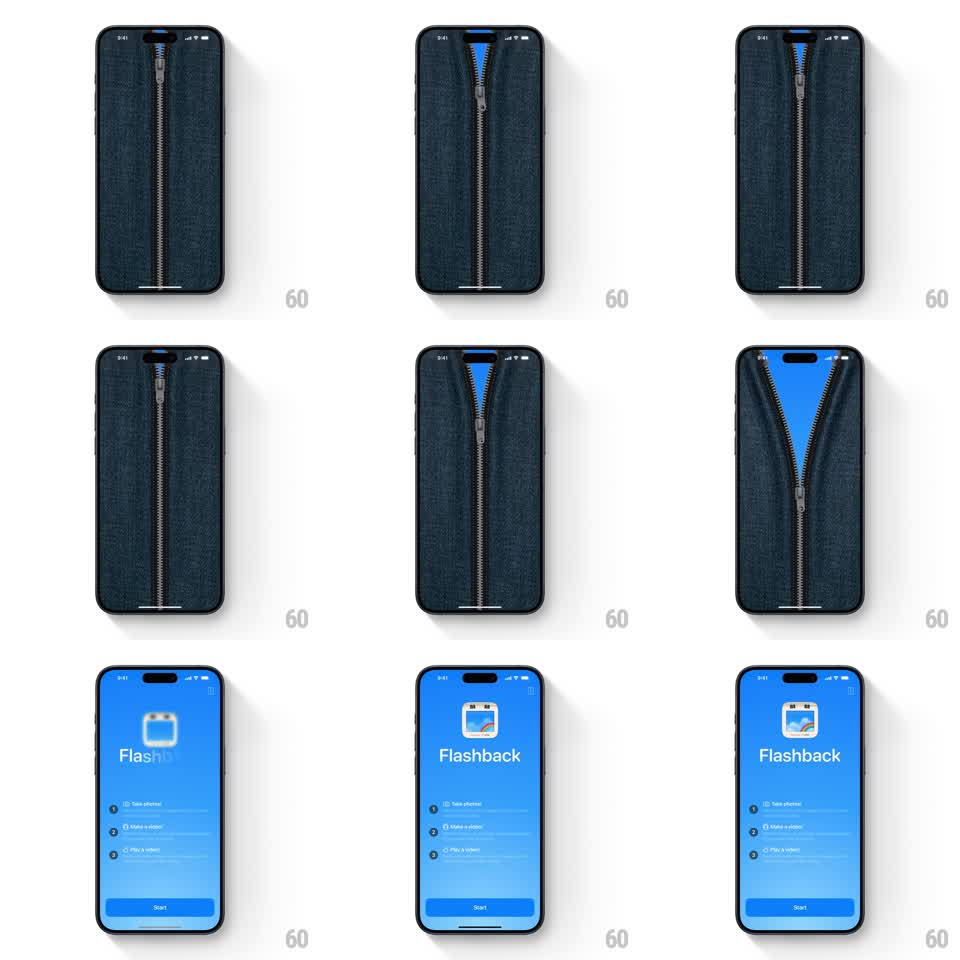

Media
Frame-by-frame

Rebuild this interaction 1:1: Flashback's zipper splash - a full-screen denim texture unzips down the middle, the fabric peeling back to reveal the app's blue onboarding screen underneath.

Rebuild this interaction 1:1: Flashback's zipper splash - a full-screen denim texture unzips down the middle, the fabric peeling back to reveal the app's blue onboarding screen underneath. ## Integration Integration: stack-agnostic spec - springs given as stiffness/damping, timed motions as duration + curve; map every value to your framework and animation library of choice. ## Scene Splash: a photoreal dark denim texture filling the screen with a metal zipper running vertically down the center, pull tab at the top. Behind it: Flashback's bright blue onboarding screen - app icon, "Flashback" wordmark, feature rows (Take photos!, Make a video!, Play a sound!), and a Start button. ## Motion spec Pattern: drag-driven zipper reveal - the pull's travel parts the fabric. - The pull tab responds to a downward drag (or auto-runs after a 800ms hold): it travels 1:1 with the finger down the zipper track with a faint metallic jitter (translateX +/-1px at 30Hz) as teeth disengage. - The denim parts as the pull passes: the fabric flaps curl outward (rotateY toward the edges with a cloth-like ease) revealing the blue screen behind - the reveal front always sits exactly at the pull tab. - Teeth separate audibly-timed in rows: a subtle 20ms stagger ripple down from the pull position. - At the bottom the pull detaches and drops (translateY + fall, 300ms with a bounce) while the two denim halves swing fully off-screen (rotateY -> +/-100 degrees, 350ms, ease-in). - The onboarding content then fades up in order: icon, wordmark, feature rows (80ms stagger), Start button last (250ms each). ## Calibration - The denim is photographic - the curl must deform like fabric (slight wave), not pivot like cardboard. - The blue behind is flat and bright - maximum contrast with the denim's texture. ## Reduced motion Denim fades out (400ms) revealing onboarding; content fades in (250ms). ## Don't miss - The reveal edge tracks the pull exactly - no gap, no lead. - The pull tab dangles at a slight angle while dragging - it's a physical object, not a slider thumb.